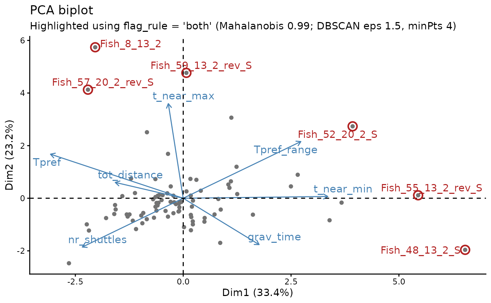

Performs a scaled principal component analysis (PCA) of selected numeric project-level shuttle-box metrics. PCA summarises correlated metrics as new axes. Fish close together have similar multivariate profiles, while separated fish differ in one or more metrics. Variable arrows show the direction in which each metric increases and help identify which measurements may be driving a flagged fish.
Usage
pca(
data,
variables = NULL,
mahalanobis_th = 0.99,
dbscan_th = 1.5,
dbscan_minPts = 4,
flag_rule = c("both", "either", "mahalanobis", "dbscan"),
print_labels = TRUE,
id_col = "fileID",
var_col = "Tpref",
biplot_variables = TRUE,
highlight_outliers = TRUE,
n_driver_variables = 3
)Arguments
- data
Project-results data containing one row per trial or individual.
- variables
Character vector naming the numeric variables to include in the PCA. Supplying this argument is recommended because it makes the analysis explicit and prevents newly added numeric columns from silently changing the PCA. If
NULL, all suitable numeric columns are used.- mahalanobis_th
Probability used for the chi-squared Mahalanobis distance cutoff. Default is 0.99. Larger values are more conservative and flag fewer fish.
- dbscan_th
epsvalue supplied to DBSCAN. Default is 1.5. Larger values generally join more neighbouring fish and flag fewer as locally isolated.- dbscan_minPts
Minimum number of neighbouring points required by DBSCAN. Default is 4. Larger values generally make the density screen more stringent, although the effect depends on sample size and structure.
- flag_rule
Rule used to define the fish highlighted as candidates for review. One of
"both"(default),"either","mahalanobis", or"dbscan"."both"is the most conservative and highlights only fish identified by both screens.- print_labels
Logical. Show labels for all individuals on PCA plots. Default is
TRUE. Flagged fish are labelled whenhighlight_outliersisTRUEeven whenprint_labels = FALSE.- id_col
Identifier column. Default is
"fileID".- var_col
Variable plotted against PC1. Default is
"Tpref".- biplot_variables
Logical. Show variable vectors on the biplot.
- highlight_outliers
Logical. Circle and label fish selected by
flag_ruleon the biplot and PC1-variable plot. Default isTRUE.- n_driver_variables
Number of unusually high or low original variables reported for each fish detected by at least one screen. Default is 3.
Value
A list containing the PCA object, loadings, scores, variance explained, method-level detections, a fish-level screening table, flagged_ids selected by flag_rule, an outlier_details table describing potential drivers, thresholds, retained identifiers, and plots.
Details
Two complementary screens are provided. Mahalanobis distance identifies fish far from the multivariate centre while accounting for covariance among PCA dimensions. DBSCAN identifies fish in locally sparse regions of the PC1-PC2 plot. flag_rule controls whether either screen, both screens, or one named screen is used for highlighting. These screens identify candidates for review, not automatic exclusions.
Examples
example_file <- system.file(
"extdata", "project_database_example.csv", package = "ShuttleboxR"
)
project_data <- read_project_database(example_file)
pca_result <- pca(
project_data,
variables = c(
"Tpref", "Tpref_range", "grav_time", "tot_distance",
"nr_shuttles", "t_near_max", "t_near_min"
),
mahalanobis_th = 0.99,
dbscan_th = 1.5,
dbscan_minPts = 4,
flag_rule = "both",
print_labels = FALSE
)
#> Warning: This FactoMineR PCA result contains only 5 eigenvalues and does not include the complete spectrum. Refit the PCA with a larger `ncp` before drawing a complete scree plot.
pca_result$plots$biplot

pca_result$screening
#> fileID mahalanobis dbscan
#> Fish_1_13_3 Fish_1_13_3 FALSE FALSE
#> Fish_2_13_2 Fish_2_13_2 FALSE FALSE
#> Fish_3_20_3_rev Fish_3_20_3_rev FALSE FALSE
#> Fish_4_20_3_rev Fish_4_20_3_rev FALSE FALSE
#> Fish_5_20_2_rev Fish_5_20_2_rev FALSE FALSE
#> Fish_6_13_3_rev Fish_6_13_3_rev FALSE FALSE
#> Fish_7_13_3 Fish_7_13_3 FALSE FALSE
#> Fish_8_13_2 Fish_8_13_2 TRUE TRUE
#> Fish_9_20_3 Fish_9_20_3 FALSE FALSE
#> Fish_10_20_2 Fish_10_20_2 FALSE FALSE
#> Fish_11_13_2_long Fish_11_13_2_long FALSE FALSE
#> Fish_12_20_3 Fish_12_20_3 FALSE FALSE
#> Fish_13_13_3 Fish_13_13_3 FALSE FALSE
#> Fish_14_13_2 Fish_14_13_2 FALSE FALSE
#> Fish_15_20_2 Fish_15_20_2 FALSE FALSE
#> Fish_16_20_3 Fish_16_20_3 FALSE FALSE
#> Fish_17_20_2_rev Fish_17_20_2_rev FALSE FALSE
#> Fish_18_13_3_rev Fish_18_13_3_rev FALSE FALSE
#> Fish_19_13_2_rev Fish_19_13_2_rev FALSE FALSE
#> Fish_20_20_3_rev Fish_20_20_3_rev FALSE FALSE
#> Fish_21_20_2_rev Fish_21_20_2_rev FALSE FALSE
#> Fish_22_13_3_rev Fish_22_13_3_rev FALSE FALSE
#> Fish_23_20_3 Fish_23_20_3 FALSE FALSE
#> Fish_24_13_2 Fish_24_13_2 FALSE FALSE
#> Fish_25_13_3 Fish_25_13_3 FALSE FALSE
#> Fish_26_20_2_rev Fish_26_20_2_rev FALSE FALSE
#> Fish_27_20_3_rev Fish_27_20_3_rev FALSE FALSE
#> Fish_28_13_3_rev Fish_28_13_3_rev TRUE FALSE
#> Fish_29_13_2_rev Fish_29_13_2_rev FALSE FALSE
#> Fish_30_20_3_rev Fish_30_20_3_rev FALSE FALSE
#> Fish_31_13_3_rev Fish_31_13_3_rev FALSE FALSE
#> Fish_32_20_2 Fish_32_20_2 FALSE FALSE
#> Fish_33_20_3 Fish_33_20_3 FALSE FALSE
#> Fish_34_13_3 Fish_34_13_3 FALSE FALSE
#> Fish_35_13_2 Fish_35_13_2 FALSE FALSE
#> Fish_36_20_3 Fish_36_20_3 FALSE FALSE
#> Fish_37_13_3_rev Fish_37_13_3_rev FALSE FALSE
#> Fish_38_20_2_rev Fish_38_20_2_rev FALSE FALSE
#> Fish_39_20_3_rev Fish_39_20_3_rev FALSE FALSE
#> Fish_40_20_3_rev Fish_40_20_3_rev FALSE FALSE
#> Fish_41_20_2_rev_B Fish_41_20_2_rev_B FALSE FALSE
#> Fish_42_13_2_rev_S Fish_42_13_2_rev_S FALSE FALSE
#> Fish_43_13_3_rev_B Fish_43_13_3_rev_B FALSE FALSE
#> Fish_44_20_2_rev_S Fish_44_20_2_rev_S FALSE FALSE
#> Fish_45_20_3_rev_B Fish_45_20_3_rev_B FALSE FALSE
#> Fish_46_20_2_S Fish_46_20_2_S FALSE FALSE
#> Fish_47_20_3_B Fish_47_20_3_B FALSE FALSE
#> Fish_48_13_2_S Fish_48_13_2_S TRUE TRUE
#> Fish_49_13_3_B Fish_49_13_3_B TRUE FALSE
#> Fish_50_20_2_S_long Fish_50_20_2_S_long FALSE FALSE
#> Fish_51_20_3_B_long Fish_51_20_3_B_long FALSE FALSE
#> Fish_52_20_2_S Fish_52_20_2_S TRUE TRUE
#> Fish_53_13_2_S Fish_53_13_2_S FALSE FALSE
#> Fish_54_13_3_B Fish_54_13_3_B FALSE FALSE
#> Fish_55_13_2_rev_S Fish_55_13_2_rev_S TRUE TRUE
#> Fish_56_13_3_rev_B Fish_56_13_3_rev_B FALSE FALSE
#> Fish_57_20_2_rev_S Fish_57_20_2_rev_S TRUE TRUE
#> Fish_58_20_3_rev_B Fish_58_20_3_rev_B FALSE FALSE
#> Fish_59_13_2_rev_S Fish_59_13_2_rev_S TRUE TRUE
#> Fish_60_13_3_rev_B Fish_60_13_3_rev_B FALSE FALSE
#> Fish_61_20_2_rev_B Fish_61_20_2_rev_B FALSE FALSE
#> Fish_62_20_3_rev_B Fish_62_20_3_rev_B FALSE FALSE
#> Fish_63_20_2_rev_S Fish_63_20_2_rev_S FALSE TRUE
#> Fish_64_13_3_rev_B_long Fish_64_13_3_rev_B_long FALSE FALSE
#> Fish_65_13_2_B Fish_65_13_2_B FALSE FALSE
#> Fish_66_20_3_B Fish_66_20_3_B FALSE FALSE
#> Fish_67_13_3_B Fish_67_13_3_B FALSE FALSE
#> Fish_68_20_3_B Fish_68_20_3_B FALSE FALSE
#> Fish_69_13_3_B_long Fish_69_13_3_B_long FALSE FALSE
#> Fish_70_13_2_rev_B Fish_70_13_2_rev_B FALSE FALSE
#> Fish_71_20_3_rev_B Fish_71_20_3_rev_B FALSE FALSE
#> Fish_72_13_3_rev_B Fish_72_13_3_rev_B FALSE FALSE
#> Fish_73_13_2_rev_B Fish_73_13_2_rev_B FALSE FALSE
#> Fish_74_20_3_rev_B Fish_74_20_3_rev_B FALSE FALSE
#> Fish_75_13_3_B Fish_75_13_3_B FALSE FALSE
#> Fish_76_20_2_B_long Fish_76_20_2_B_long FALSE FALSE
#> Fish_77_20_2_B Fish_77_20_2_B FALSE FALSE
#> Fish_78_13_2_B Fish_78_13_2_B FALSE FALSE
#> Fish_79_13_2_B_long Fish_79_13_2_B_long FALSE FALSE
#> Fish_80_13_2_rev_B Fish_80_13_2_rev_B FALSE FALSE
#> Fish_81_20_2_rev_B Fish_81_20_2_rev_B FALSE FALSE
#> Fish_82_13_2_rev_B Fish_82_13_2_rev_B FALSE FALSE
#> Fish_83_13_2_rev_B Fish_83_13_2_rev_B FALSE FALSE
#> Fish_84_20_2_B Fish_84_20_2_B FALSE FALSE
#> Fish_85_20_2_B Fish_85_20_2_B FALSE FALSE
#> methods detected_by_both flagged flag_rule
#> Fish_1_13_3 None FALSE FALSE both
#> Fish_2_13_2 None FALSE FALSE both
#> Fish_3_20_3_rev None FALSE FALSE both
#> Fish_4_20_3_rev None FALSE FALSE both
#> Fish_5_20_2_rev None FALSE FALSE both
#> Fish_6_13_3_rev None FALSE FALSE both
#> Fish_7_13_3 None FALSE FALSE both
#> Fish_8_13_2 Mahalanobis + DBSCAN TRUE TRUE both
#> Fish_9_20_3 None FALSE FALSE both
#> Fish_10_20_2 None FALSE FALSE both
#> Fish_11_13_2_long None FALSE FALSE both
#> Fish_12_20_3 None FALSE FALSE both
#> Fish_13_13_3 None FALSE FALSE both
#> Fish_14_13_2 None FALSE FALSE both
#> Fish_15_20_2 None FALSE FALSE both
#> Fish_16_20_3 None FALSE FALSE both
#> Fish_17_20_2_rev None FALSE FALSE both
#> Fish_18_13_3_rev None FALSE FALSE both
#> Fish_19_13_2_rev None FALSE FALSE both
#> Fish_20_20_3_rev None FALSE FALSE both
#> Fish_21_20_2_rev None FALSE FALSE both
#> Fish_22_13_3_rev None FALSE FALSE both
#> Fish_23_20_3 None FALSE FALSE both
#> Fish_24_13_2 None FALSE FALSE both
#> Fish_25_13_3 None FALSE FALSE both
#> Fish_26_20_2_rev None FALSE FALSE both
#> Fish_27_20_3_rev None FALSE FALSE both
#> Fish_28_13_3_rev Mahalanobis FALSE FALSE both
#> Fish_29_13_2_rev None FALSE FALSE both
#> Fish_30_20_3_rev None FALSE FALSE both
#> Fish_31_13_3_rev None FALSE FALSE both
#> Fish_32_20_2 None FALSE FALSE both
#> Fish_33_20_3 None FALSE FALSE both
#> Fish_34_13_3 None FALSE FALSE both
#> Fish_35_13_2 None FALSE FALSE both
#> Fish_36_20_3 None FALSE FALSE both
#> Fish_37_13_3_rev None FALSE FALSE both
#> Fish_38_20_2_rev None FALSE FALSE both
#> Fish_39_20_3_rev None FALSE FALSE both
#> Fish_40_20_3_rev None FALSE FALSE both
#> Fish_41_20_2_rev_B None FALSE FALSE both
#> Fish_42_13_2_rev_S None FALSE FALSE both
#> Fish_43_13_3_rev_B None FALSE FALSE both
#> Fish_44_20_2_rev_S None FALSE FALSE both
#> Fish_45_20_3_rev_B None FALSE FALSE both
#> Fish_46_20_2_S None FALSE FALSE both
#> Fish_47_20_3_B None FALSE FALSE both
#> Fish_48_13_2_S Mahalanobis + DBSCAN TRUE TRUE both
#> Fish_49_13_3_B Mahalanobis FALSE FALSE both
#> Fish_50_20_2_S_long None FALSE FALSE both
#> Fish_51_20_3_B_long None FALSE FALSE both
#> Fish_52_20_2_S Mahalanobis + DBSCAN TRUE TRUE both
#> Fish_53_13_2_S None FALSE FALSE both
#> Fish_54_13_3_B None FALSE FALSE both
#> Fish_55_13_2_rev_S Mahalanobis + DBSCAN TRUE TRUE both
#> Fish_56_13_3_rev_B None FALSE FALSE both
#> Fish_57_20_2_rev_S Mahalanobis + DBSCAN TRUE TRUE both
#> Fish_58_20_3_rev_B None FALSE FALSE both
#> Fish_59_13_2_rev_S Mahalanobis + DBSCAN TRUE TRUE both
#> Fish_60_13_3_rev_B None FALSE FALSE both
#> Fish_61_20_2_rev_B None FALSE FALSE both
#> Fish_62_20_3_rev_B None FALSE FALSE both
#> Fish_63_20_2_rev_S DBSCAN FALSE FALSE both
#> Fish_64_13_3_rev_B_long None FALSE FALSE both
#> Fish_65_13_2_B None FALSE FALSE both
#> Fish_66_20_3_B None FALSE FALSE both
#> Fish_67_13_3_B None FALSE FALSE both
#> Fish_68_20_3_B None FALSE FALSE both
#> Fish_69_13_3_B_long None FALSE FALSE both
#> Fish_70_13_2_rev_B None FALSE FALSE both
#> Fish_71_20_3_rev_B None FALSE FALSE both
#> Fish_72_13_3_rev_B None FALSE FALSE both
#> Fish_73_13_2_rev_B None FALSE FALSE both
#> Fish_74_20_3_rev_B None FALSE FALSE both
#> Fish_75_13_3_B None FALSE FALSE both
#> Fish_76_20_2_B_long None FALSE FALSE both
#> Fish_77_20_2_B None FALSE FALSE both
#> Fish_78_13_2_B None FALSE FALSE both
#> Fish_79_13_2_B_long None FALSE FALSE both
#> Fish_80_13_2_rev_B None FALSE FALSE both
#> Fish_81_20_2_rev_B None FALSE FALSE both
#> Fish_82_13_2_rev_B None FALSE FALSE both
#> Fish_83_13_2_rev_B None FALSE FALSE both
#> Fish_84_20_2_B None FALSE FALSE both
#> Fish_85_20_2_B None FALSE FALSE both
#> mahalanobis_distance
#> Fish_1_13_3 3.1195962
#> Fish_2_13_2 4.7865783
#> Fish_3_20_3_rev 1.3303164
#> Fish_4_20_3_rev 0.8419749
#> Fish_5_20_2_rev 2.7722127
#> Fish_6_13_3_rev 1.5301719
#> Fish_7_13_3 4.1146730
#> Fish_8_13_2 23.4082630
#> Fish_9_20_3 2.4718994
#> Fish_10_20_2 4.2113302
#> Fish_11_13_2_long 1.5203681
#> Fish_12_20_3 1.5892196
#> Fish_13_13_3 9.1449386
#> Fish_14_13_2 0.9720693
#> Fish_15_20_2 1.9920436
#> Fish_16_20_3 1.5731024
#> Fish_17_20_2_rev 11.7067504
#> Fish_18_13_3_rev 3.8669803
#> Fish_19_13_2_rev 3.7505145
#> Fish_20_20_3_rev 3.3355304
#> Fish_21_20_2_rev 5.1480643
#> Fish_22_13_3_rev 2.0469328
#> Fish_23_20_3 2.2599640
#> Fish_24_13_2 1.9196223
#> Fish_25_13_3 6.3642517
#> Fish_26_20_2_rev 4.8963290
#> Fish_27_20_3_rev 8.3093813
#> Fish_28_13_3_rev 23.4277828
#> Fish_29_13_2_rev 0.8694804
#> Fish_30_20_3_rev 0.8476668
#> Fish_31_13_3_rev 0.6861941
#> Fish_32_20_2 1.3688304
#> Fish_33_20_3 6.3500962
#> Fish_34_13_3 1.0520296
#> Fish_35_13_2 2.4961617
#> Fish_36_20_3 1.5178479
#> Fish_37_13_3_rev 1.3811385
#> Fish_38_20_2_rev 1.0177278
#> Fish_39_20_3_rev 3.7516692
#> Fish_40_20_3_rev 2.4585958
#> Fish_41_20_2_rev_B 0.9972096
#> Fish_42_13_2_rev_S 3.0911034
#> Fish_43_13_3_rev_B 0.7945469
#> Fish_44_20_2_rev_S 2.5294280
#> Fish_45_20_3_rev_B 1.8073085
#> Fish_46_20_2_S 6.6017303
#> Fish_47_20_3_B 4.7320332
#> Fish_48_13_2_S 30.7735415
#> Fish_49_13_3_B 15.2238548
#> Fish_50_20_2_S_long 7.0093622
#> Fish_51_20_3_B_long 5.4003832
#> Fish_52_20_2_S 15.1457532
#> Fish_53_13_2_S 10.8769384
#> Fish_54_13_3_B 1.0707766
#> Fish_55_13_2_rev_S 16.7192963
#> Fish_56_13_3_rev_B 1.1380546
#> Fish_57_20_2_rev_S 21.1656851
#> Fish_58_20_3_rev_B 6.0172296
#> Fish_59_13_2_rev_S 20.6332820
#> Fish_60_13_3_rev_B 2.3719791
#> Fish_61_20_2_rev_B 1.5537541
#> Fish_62_20_3_rev_B 2.8456231
#> Fish_63_20_2_rev_S 9.3300587
#> Fish_64_13_3_rev_B_long 3.6214042
#> Fish_65_13_2_B 2.5261577
#> Fish_66_20_3_B 3.4622401
#> Fish_67_13_3_B 0.9714885
#> Fish_68_20_3_B 3.5147910
#> Fish_69_13_3_B_long 3.6778933
#> Fish_70_13_2_rev_B 3.0647396
#> Fish_71_20_3_rev_B 2.7851303
#> Fish_72_13_3_rev_B 0.5419383
#> Fish_73_13_2_rev_B 0.7481478
#> Fish_74_20_3_rev_B 0.5370468
#> Fish_75_13_3_B 1.2340210
#> Fish_76_20_2_B_long 14.3897871
#> Fish_77_20_2_B 0.7396095
#> Fish_78_13_2_B 3.0692778
#> Fish_79_13_2_B_long 1.7310520
#> Fish_80_13_2_rev_B 0.6274936
#> Fish_81_20_2_rev_B 5.6362577
#> Fish_82_13_2_rev_B 1.1126421
#> Fish_83_13_2_rev_B 4.5213868
#> Fish_84_20_2_B 0.7987918
#> Fish_85_20_2_B 6.6514708
pca_result$outlier_details
#> fileID methods flagged mahalanobis_distance
#> 1 Fish_8_13_2 Mahalanobis + DBSCAN TRUE 23.408263
#> 2 Fish_28_13_3_rev Mahalanobis FALSE 23.427783
#> 3 Fish_48_13_2_S Mahalanobis + DBSCAN TRUE 30.773541
#> 4 Fish_49_13_3_B Mahalanobis FALSE 15.223855
#> 5 Fish_52_20_2_S Mahalanobis + DBSCAN TRUE 15.145753
#> 6 Fish_55_13_2_rev_S Mahalanobis + DBSCAN TRUE 16.719296
#> 7 Fish_57_20_2_rev_S Mahalanobis + DBSCAN TRUE 21.165685
#> 8 Fish_59_13_2_rev_S Mahalanobis + DBSCAN TRUE 20.633282
#> 9 Fish_63_20_2_rev_S DBSCAN FALSE 9.330059
#> potential_drivers
#> 1 t_near_max high (4.2 SD); grav_time low (-3 SD); tot_distance high (2.4 SD)
#> 2 nr_shuttles high (4.9 SD); tot_distance high (1.4 SD); Tpref_range low (-1.1 SD)
#> 3 t_near_min high (5.2 SD); grav_time high (3.7 SD); Tpref low (-3.2 SD)
#> 4 grav_time high (3.7 SD); Tpref_range low (-0.7 SD); tot_distance low (-0.4 SD)
#> 5 t_near_min high (3.1 SD); Tpref_range high (3 SD); t_near_max high (2.1 SD)
#> 6 t_near_min high (4.2 SD); Tpref_range high (2.7 SD); Tpref low (-2.4 SD)
#> 7 t_near_max high (4.7 SD); Tpref high (2.2 SD); grav_time low (-1.2 SD)
#> 8 t_near_max high (4.3 SD); Tpref high (2.2 SD); Tpref_range high (1.9 SD)
#> 9 t_near_max high (2.6 SD); Tpref_range high (2.3 SD); tot_distance low (-1.5 SD)